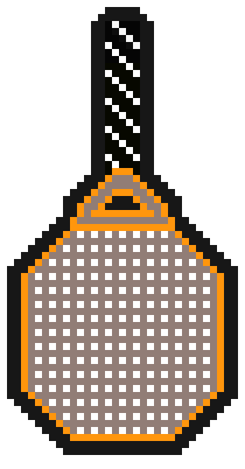

Utfør en smash og sjekk ut resten av vår side ved å slå på logoen under.
Juleøl 2020
Denne inneholder et innslag av malt og sødme, med smak av appelsin og brunt sukker. En delikat ettersmak av sjokolade og nøtter.
Julen er en tid der jeg MÅ drikke masse. Jeg hamster inn juleøl i store mengder og sorter. 30 øl og 0,5 l likør skal fordeles på julaften, 1.juledag og 2.juledag. Er dette unormalt mye?
Anonymbruker - 2014 - Kvinneguiden
330 ML - 4%
Utfør en smash og sjekk ut resten av vår side ved å slå på logoen under.